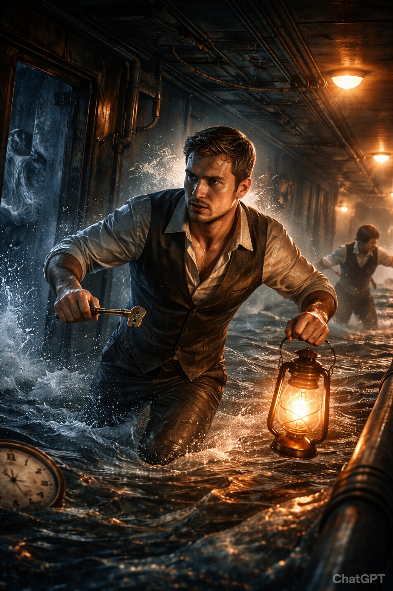

No es solo un juego. Es una carrera contra el reloj en una instalación de máxima seguridad. ¿Tienes la agudeza mental para salir antes de que se agote el oxígeno?
En Escape from the Sinking Titanic, te enfrentas a una carrera contra el reloj dentro de un enorme barco que se hunde, donde cada habitación es una pieza de un rompecabezas gigante. Tendrás que moverte entre estancias, activar mecanismos, encontrar objetos clave y desandar tus pasos para desbloquear nuevos caminos y soluciones, conectando pistas que al principio parecen no tener relación.
El juego te invita a observar con atención, memorizar rutas y pensar estratégicamente, ya que el entorno cambia y el tiempo no se detiene. Todo está presentado con una estética vintage que refuerza la tensión y la sensación de estar atrapado en un lugar elegante, pero condenado, donde cada decisión te puede acercar a la salida... o sellar tu destino.

Desencripta archivos, resuelve acertijos matemáticos y conecta circuitos para avanzar.
Busca pistas ocultas en el entorno. Cada objeto interactuable puede ser la clave.
El reloj no se detiene. La tensión aumenta a medida que el tiempo se agota.